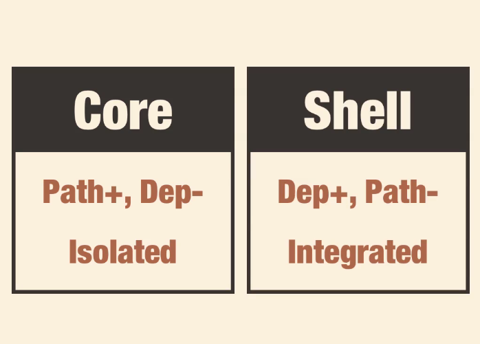

Hangman is a popular game for teaching programming fundamentals - it's simple, has only a small number of variables and simple rules. This simplicity also makes it a good way to explore different programming styles. In this article I'm going to develop a browser-based Hangman game written in the 'Functional Core, Imperative Shell'. The code for this game can be seen here and a live demo here.
Functional Core, Imperative Shell
Source: Destroy All Software
For those who haven't heard of it, 'Functional Core, Imperative Shell' is a programming approach mooted by Gary Bernhardt (see this talk for an explanation), which aims to marry the reliability offered by functional programming with the more 'real world' pragmatism offered by an imperative approach. It's well worth watching the talk (and the related videos from the Destroy All Software screencasts) to get a better understanding, but here's my take on it:
- The functional core refers to classes that have immutable state, make decisions about objects, and have few dependencies. This is easy to test in isolation.
- The imperative shell ties all these cores together, transmitting objects as values from one to the other to perform operations.
It's well worth checking out the talk itself to get to grips with the ideas. For this article, I've written a simple browser-based Hangman game in Javascript mimicking this style as a way of exploring the implication for software design.
Rules of the Game

The rules of hangman are this - We have to guess a word by guessing individual letters. We have a set number of lives and lose a life each time we make a wrong guess.
It's a pen and paper game, where the unknown word is displayed as dashes, with letters fill in as we guess them. A sketch of the scaffold is added to each time there's a wrong guess. If the sketch is completed before we complete the game, then we lose!
Thinking about this programmatically, we can see that the state of the game at any time can be represented through the use of a limited number of variables and operations on these variables.
- At the start of the game we choose a word to be guessed.
- We also have a number of lives, which is the total number of wrong guesses we are allowed.
- Finally we have our guesses, the letters that we have guessed so far.
- The game has three possible states - Victory (all letters guessed), Death (no more lives left) or Still Playing. All of these can be figured out using the above three variables.
It's worth emphasising that the lives, or maximum number of wrong guesses, and the word are set at the start of the game. The only thing that changes throughout the course of a game is the guessed letters, and everything else follows on from that.
So, let's think about some more variables.
- The correct guesses are the letters in the guesses that are also contained in the word. If we have a set of guessed letters and a set of the word's letters, the correct guesses are the intersection of these sets.
- Similarly, the incorrect guesses are the guessed letters that are not contained in the word. So they are the difference of these sets.
Putting it into practice
The game state can be worked out on the basis of the above. If the number of incorrect guesses is the same as the number of lives, then the player is dead. If the number of correct guesses is the same as the number of letters in the word, then the word must be completely guessed, and the player has won! :-)
Javascript has some lovely new set objects, so we can use these to simplify our code. First we need some intersection and difference utility methods.
var intersection = function(setA, setB){
return new Set([x for (x of setA) if (setB.has(x))]);
}
var difference = function(setA, setB){
return new Set([x for (x of setA) if (!setB.has(x))]);
}
These methods are also using the lovely (and very Pythonic!) list comprehensions. If you want to learn more about the Javascript Set object, check the docs here.
We're now ready to define our Game class. This will reflect the state of our game (this is probably not best Javascript OOP practice).
var Game = function(lives, word, guesses){
this.lives = lives;
this.word = word;
this.guesses = guesses;
this.word_letters = new Set(this.word);
this.correct_guesses = intersection(this.guesses, this.word_letters);
this.incorrect_guesses = difference(this.guesses, this.word_letters);
this.is_dead = this.lives <= this.incorrect_guesses.size;
this.has_won = this.correct_guesses.size == (this.word_letters.size);
this.addGuess = function(letter){
return Game(this.lives, this.word,
this.guesses.add(letter));
}
return this;
}
The Game object is initiated with three variables - lives, words and guesses, with all the subsequent variables derived from these. Also worth noting is the addGuess function. In a more typical OOP approach, we might expect this to be a 'setter', i.e., a method that would modify the internal values of the object. For instance, we might write something like this:
this.addGuess = function(letter){
this.guesses.add(letter));
}
This modification of internal values would then mean that the other key variables would also need to be accessed via methods rather than as values, as the mutation will require dependent variables to be recalculated each time they are used. For instance, we might have Game.getCorrectGuesses(), which computes and returns the correct guesses each time it is run.
Instead, with the functional core style, when we add a guess, we return a whole new game object with the letter added to the guesses. The lives and the word stay the same, and the other dependent variables are automatically calculated.
Let's take a quick look at how this will work in practice. Here's a snippet from our interface module:
var lives = 5;
var words = ['munificent','antelope','interlude', 'television', 'moribund', 'pabulum'];
var word = chooseWord(words);
var guesses = new Set([]);
var game_obj = game.Game(lives, word, guesses);
That's the Game object instantiated on page load with a fixed number of lives, a word, and an empty set of guesses. We also need a way to update it as we get new guesses in. So we'll create a function to handle input and bind it to the keypress.
$(document).keypress(function(e){
handleInput(e);
});
var handleInput = function(e){
if (!isLetter(e.key) || (game_obj.guesses.has(e.key))){
return;
}
game_obj = game_obj.addGuess(e.key);
scr = screen.Screen(game_obj);
drawScreen(scr);
}
Our handleInput function performs some simple validation and uses the addGuess function, which of course returns a whole new Game object.
Now that we know how to keep track of the game, the other big thing we have to worry about is displaying this game to the user.
We'll do this with a Screen object, written in the same style as the Game object. This will have a few variables, a message to display to the user, the word (with dashes for unguessed letters), a gallows that is added to as they guess wrong, and the wrong guesses. All of these variables will be simple strings - ready to be squirted out into our html.
var Screen = function(game){
this.msg = getMsg(game);
this.word = getWord(game);
this.gallows = gallows.stages[game.incorrect_guesses.size];
this.wrong_guesses = [...game.incorrect_guesses].join(' ');
return this;
}
The Screen object is created using a Game object, and the variables are defined by doing some calculations on one or more properties of this object. getMsg simply returns a message appropriate to the state of the game, while getWord gets the word for display, by splitting it into an array of letters (e.g., 'antelope' -> ['a', 'n', 't', 'e', 'l', 'o', 'p', 'e']) and returns an underscore if the letter is not guessed, the letter itself if it is.
var getWord = function(game){
var getLetter= function(letter){
return (game.guesses.has(letter) ? letter : "_");
}
var display_letters = game.word.split('').map(getLetter);
return display_letters.join(' ');
}
And that's the Screen object. Handling this will just involve adding the relevant bits of the Screen object into our html. Our drawScreen method will live in and be called from the interface module.
var drawScreen = function(screen){
$('#game-message').html(screen.msg);
$('#gallows').html(screen.gallows);
$('#display-word').html(screen.word);
$('#guesses').html(screen.wrong_guesses);
};
Remember, this interface module is the 'imperative shell', or management layer of our application. It's worth looking at the core init method from a high-level.
var init = function(){
var lives = 5;
var words = ['munificent','antelope','interlude',
'television', 'moribund', 'pabulum'];
var word = chooseWord(words);
var guesses = new Set([]);
var game_obj = game.Game(lives, word, guesses);
var scr = screen.Screen(game_obj);
drawScreen(scr);
$(document).keypress(function(e){
handleInput(e);
});
var handleInput = function(e){
if (!isLetter(e.key) || (game_obj.guesses.has(e.key))){
return;
}
if (game_obj.is_dead || game_obj.has_won){
return;
}
game_obj = game_obj.addGuess(e.key);
scr = screen.Screen(game_obj);
drawScreen(scr);
}
}
This module is the overall manager of the sub-classes. It instantiates our Game object and passes that be composed as a Screen object, which is then drawn to the page. We then wait for user input and repeat the process until the user wins or is dead.
So that's it for our Hangman game! It's a simple game, but I hope I've shown some of the advantages of this 'Functional Core, Imperative Shell' approach.